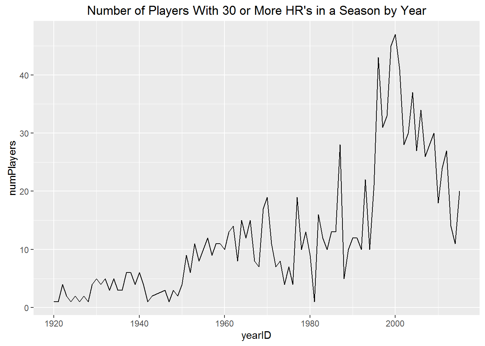

MySQL Lahman Database
Nov 28, 2016Shortly before the start of the 2016 World Series, I imported the Lahman baseball database into MySQL and built a few interesting statistics out of it. There is a Lahman dataset that comes with the dplyr package but I figured it would be good practice to explore the dataset with SQL and R.
Here’s how I went about my cursory glance.
Connect to database
I used the DBI and RMySQL packages to connect to the Lahman database from R.
library(DBI)
library(RMySQL)
db <- dbConnect(MySQL(), dbname = "lahman")Generating stats with SQL
I then set the knitr language engine to SQL for the following code chunks. I then generated some SQL statements to take an intitial look at the dataset.
More than 2000 regular season hits with NO hits while appearing in the postseason
SELECT tmin.playerID, tmin.H_total as H_regular, ptmax.H_total as H_post
FROM (
SELECT t.playerID, t.H_total
FROM (
SELECT playerID, sum(H) as H_total
FROM batting
GROUP BY playerID) as t
WHERE t.H_total >= 2000
) as tmin
INNER JOIN (
SELECT pt.playerID, pt.H_total
FROM (
SELECT playerID, sum(H) as H_total
FROM battingpost
GROUP BY playerID) as pt
WHERE pt.H_total = 0
) as ptmax
ON tmin.playerID = ptmax.playerID
ORDER BY H_regular DESC;| playerID | H_regular | H_post |
|---|---|---|
| willibi01 | 2711 | 0 |
| averiea01 | 2017 | 0 |
More than 2000 regular season hits with NO postseason AB
SELECT tmin.playerID, tmin.H_total
FROM (
SELECT t.playerID, t.H_total
FROM (
SELECT playerID, sum(H) as H_total
FROM batting
GROUP BY playerID
) as t
WHERE t.H_total >= 2000
) as tmin
LEFT JOIN battingpost as bp
ON tmin.playerID = bp.playerID
WHERE bp.playerID IS NULL
ORDER BY tmin.H_total DESC;| playerID | H_total |
|---|---|
| applilu01 | 2749 |
| bankser01 | 2583 |
| bellbu01 | 2514 |
| vernomi01 | 2495 |
| torrejo01 | 2342 |
| santoro01 | 2254 |
| kellge01 | 2054 |
| johnsbo01 | 2051 |
Most postseason AB without a hit
SELECT pt.playerID, pt.AB_total, pt.H_total
FROM (
SELECT playerID, sum(AB) as AB_total, sum(H) as H_total
FROM battingpost
GROUP BY playerID
) as pt
WHERE pt.AB_total > 10 AND pt.H_total = 0
ORDER BY pt.AB_total DESC
LIMIT 10;| playerID | AB_total | H_total |
|---|---|---|
| earnsge01 | 22 | 0 |
| sullibi03 | 21 | 0 |
| freylo01 | 20 | 0 |
| reussje01 | 19 | 0 |
| bergewa01 | 18 | 0 |
| brookto01 | 18 | 0 |
| bumgama01 | 18 | 0 |
| grovele01 | 18 | 0 |
| tebeapa01 | 18 | 0 |
| tudorjo01 | 17 | 0 |
Lowest BA while hitting 30 or more HR
SELECT playerID, yearID, teamID, HR, H/AB as BA
FROM batting
WHERE HR >= 30
ORDER BY BA ASC
LIMIT 10;| playerID | yearID | teamID | HR | BA |
|---|---|---|---|---|
| reynoma01 | 2010 | ARI | 32 | 0.1984 |
| kingmda01 | 1982 | NYN | 37 | 0.2037 |
| dunnad01 | 2012 | CHA | 41 | 0.2041 |
| kingmda01 | 1986 | OAK | 35 | 0.2103 |
| kittlro01 | 1984 | CHA | 32 | 0.2146 |
| thomago01 | 1985 | SEA | 32 | 0.2149 |
| valenjo03 | 2004 | CHA | 30 | 0.2156 |
| armasto01 | 1983 | BOS | 36 | 0.2178 |
| dunnad01 | 2013 | CHA | 34 | 0.2190 |
| reynoma01 | 2011 | BAL | 37 | 0.2210 |
Generating statistics with R
I couldn’t resist importing some of the datasets into R. Afterall, I am not as saavy with SQL as I am with R. I decided also to focus on generating one statistic, for now.
Consecutive 30 or more HR seasons
One part SQL
First, using SQL, I need to grab the data from the database for players that have hit 30 or more HR’s.
SELECT playerID,
yearID,
count(yearID) as stint,
sum(G) as G,
sum(AB) as AB,
sum(R) as R,
sum(H) as H,
sum(2B) as 2B,
sum(3B) as 3B,
sum(HR) as HR,
sum(RBI) as RBI,
sum(SB) as SB,
sum(CS) as CS,
sum(BB) as BB,
sum(SO) as SO,
sum(IBB) as IBB,
sum(HBP) as HBP,
sum(SH) as SH,
sum(SF) as SF,
sum(GIDP) as GIDP
FROM batting
WHERE playerID IN
(SELECT DISTINCT b.playerID
FROM
(SELECT playerID, yearID, sum(HR) as HR
FROM batting
GROUP BY playerID, yearID) as b
WHERE b.HR >= 30)
GROUP BY playerID, yearID;Three parts R: Part I
First thing I did with R was to generate the necessary conditions and splits in order to aggregate the data. I then added two columns: (1) to reflect the number of players which meet the condition >= 30 HR and (2) to indicate the number of HR per player for each year.
library(magrittr)
library(plyr)
library(ggplot2)
# Filter data for >= 30 HR. Find consecutive seasons of >= 30 HR.
HR.min <- (batting$HR >= 30) %>% which
HR.strk <- split(batting[HR.min, ], cumsum(c(1, diff(HR.min) != 1)))
HR.min.agg <- ldply(HR.strk)
# Add results by year
HR.year.agg <- aggregate(. ~ yearID, FUN = sum, data = HR.min.agg[, -c(1:2, 4)])
HR.year.split <- split(HR.min.agg, HR.min.agg$yearID)
# Add columns: numPlayers, HRperPlayer
HR.year.agg$numPlayers <- sapply(HR.year.split, nrow)
HR.year.agg$HRperPlayer <- HR.year.agg$HR/HR.year.agg$numPlayersThree parts R: Part II
With the data above, I can plot the two new columns.
# Plot data
plots <- list()
plots$numPlayers <- ggplot(HR.year.agg, aes(yearID, numPlayers))
plots$HRperPlayer <- ggplot(HR.year.agg, aes(yearID, HRperPlayer))
# View plots
plots$numPlayers + geom_line() + ggtitle("Number of Players With 30 or More HR's in a Season by Year")
plots$HRperPlayer + geom_line() + ggtitle("Average HR's per Player With 30 or More HR's in a Season by Year")
Three parts R: Part III
Finally, I decided to take a look at those players with at least 6 consecutive seasons of 30 or more HR’s. There were quite a few players I could not recognize, such as Jimmie Foxx and Eddie Mathews.
# Sort streaks of >= 30 HR
HR.strk.count <- data.frame(playerID = sapply(HR.strk, function(x) x[[1]][1]))
HR.strk.count$streak <- sapply(HR.strk, nrow)
HR.strk.count <- HR.strk.count[order(-HR.strk.count$streak), ]
row.names(HR.strk.count) <- NULL
HR.strk.count[HR.strk.count$streak >= 6, ]## playerID streak
## 1 bondsba01 13
## 2 rodrial01 13
## 3 foxxji01 12
## 4 pujolal01 12
## 5 delgaca01 10
## 6 sosasa01 10
## 7 gehrilo01 9
## 8 matheed01 9
## 9 palmera01 9
## 10 ramirma02 9
## 11 schmimi01 9
## 12 thomeji01 9
## 13 bagweje01 8
## 14 belleal01 8
## 15 mantlmi01 8
## 16 piazzmi01 8
## 17 ruthba01 8
## 18 teixema01 8
## 19 aaronha01 7
## 20 cabremi01 7
## 21 dunnad01 7
## 22 mcgrifr01 7
## 23 fieldpr01 6
## 24 heltoto01 6
## 25 howarry01 6
## 26 killeha01 6
## 27 mayswi01 6
## 28 mccovwi01 6
## 29 mcgwima01 6
## 30 vaughmo01 6